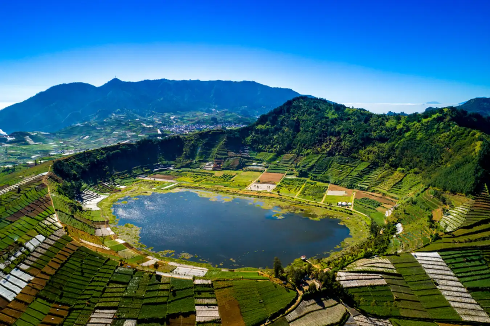

TELAGA MERDADA
Jika ada satu ciri khas dari destinasi wisata alam yang ada di Banjarnegara, adalah kebanyakan di antaranya terbuat dari aktivitas perut bumi. Dalam hal ini, Telaga Merdada termasuk di dalamnya. Ketika kamu mengunjungi tempat ini, bentuk yang ada akan membuat kamu mengetahui bahwa telaga ini adalah hasil dari fenomena alam, yaitu hasil letusan gunung berapi. Selain tentunya jadi tempat yang cocok untuk bersantai menggunakan hammock, Telaga Merdada juga merupakan salah satu telaga terbesar yang ada di Banjarnegara.